From the Visitors’ BookWords of encouragement & appreciation
These remarks have been carefully transcribed from the original handwritten entries. The accompanying images are faithful black-and-white reproductions of the original pages.
2022
10 November 2022
Shri C.D. Mungyak
Director, Science & Technology, Government of Arunachal Pradesh
“One of the best library seen in the State.”
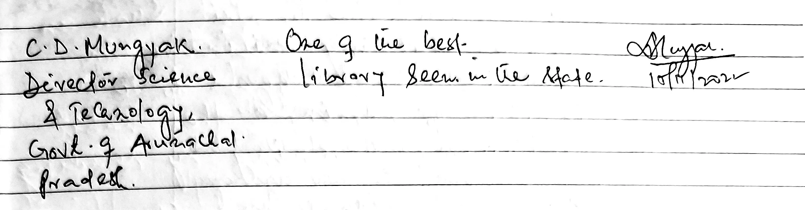
Original handwritten entry (including signature)
10 November 2022
Smt. Suwara Mungyak
Lecturer, C.P. Namchoom Government Polytechnic College, Namsai
“A very innovative idea. This will benefit the children and the elders too. Congratulations.”
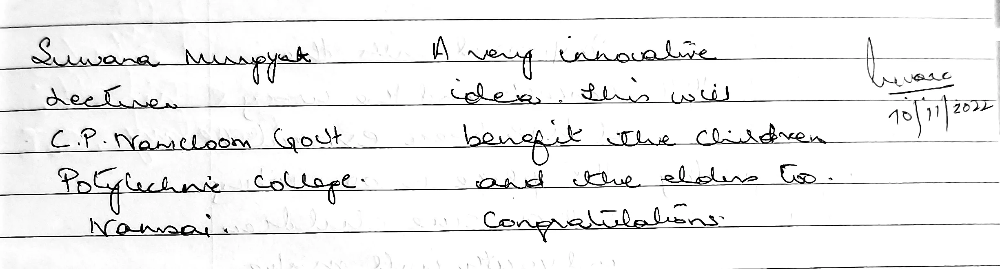
Original handwritten entry (including signature)
15 November 2022
Smt. Abha Singh
Retired Indian Forest Service (IFS), Uttar Pradesh
“It's a good library. Collection of books are and thoughts are inspirational and a way to succeed for the children and youth. May God bless all the persons related to this thought.”
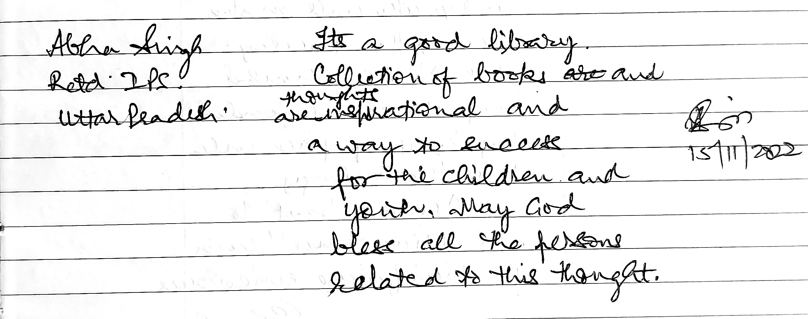
Original handwritten entry (including signature)
30 November 2022
Shri Abhinav Jain
Officer Trainee, Lal Bahadur Shastri National Academy of Administration (LBSNAA)
“The place is well designed and properly planned. There are books relevant for all age groups. Enjoy learning. All the best.”
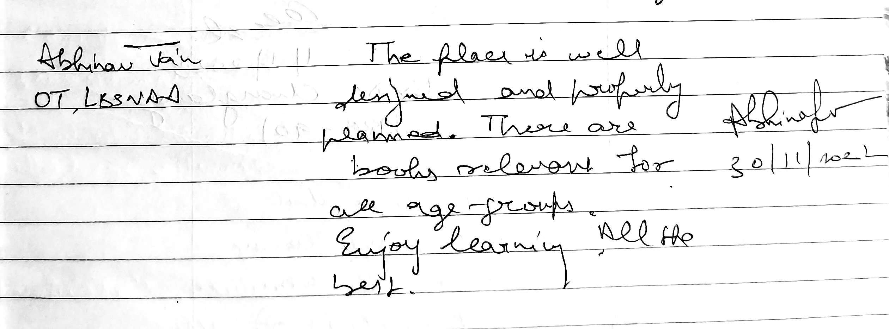
Original handwritten entry (including signature)
30 November 2022
Shri Shrikant Kelgandre, IFS
Officer Trainee, Lal Bahadur Shastri National Academy of Administration (LBSNAA)
“It is a very good place for Civil service preparation. Nice Collection of books. Also promotes reading habit among students.”
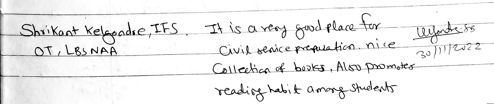
Original handwritten entry (including signature)
2023
30 September 2023
Shri Arvind Hanglem
Indian Administrative Service (IAS), 2023 Batch
“'An idea born, cannot be killed'. An idea can change millions – not just the present but also for the future and the unseen souls. Driven by motivation and the inner zeal to change peoples' lives, DC Sunny Sir started this wonderful initiative of NALC which will create spiral effect to all the people & especially the youngsters. As a civil servant myself, I myself thrilled with this amazing initiative. Hope that the aspirations of NALC stands strong like the lofty mountains of Arunachal Pradesh and let it shine like the rising sun of the far east.”
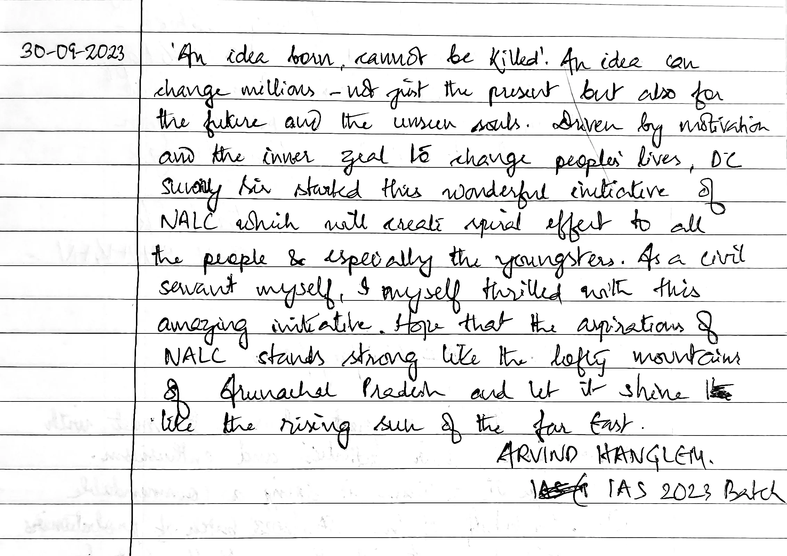
Original handwritten entry (including signature)
Circa late 2023
Shri Vishwajeet Soumyan
IPS Probationer, Lal Bahadur Shastri National Academy of Administration (LBSNAA), Mussoorie
“Learning centre is very student friendly. Great to visit here. Very pleased to visit here.”
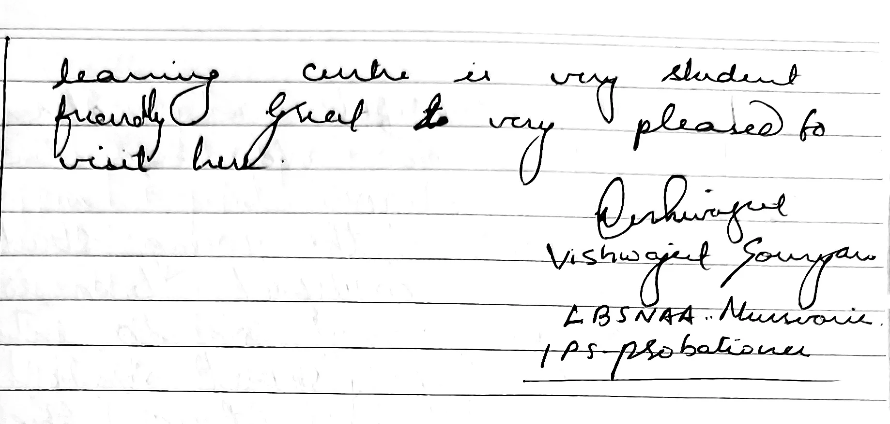
Original handwritten entry (including signature)
31 November 2023 (as written)
Visitor (Signature partially legible)
—
“A beautiful place to learn, think and educate with a wonderful environment.”
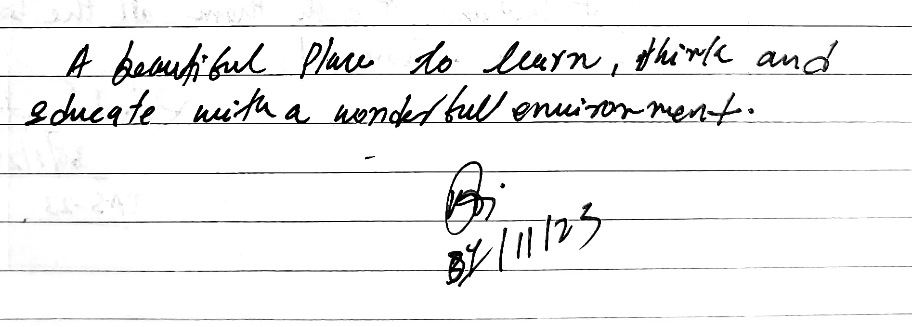
Original handwritten entry (including signature)
28 December 2023
Smt. Anagha Parnaik
First Lady of Arunachal Pradesh, Raj Bhavan
“It's wonderful and enchanting to be here New Age Learning Centre Miao. Meeting the young students of this beautiful town is like blessing. They are so intelligent and full of spirit and laughter. God Bless them. And I compliment the staff who are so committed and helpful so the students can learn and gain knowledge.”
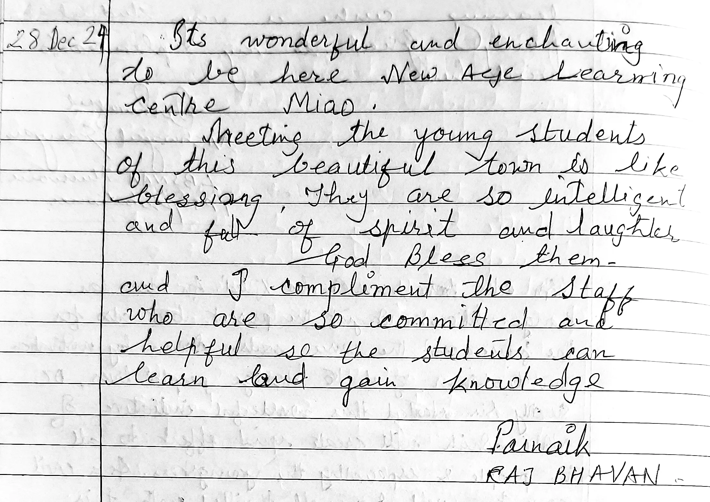
Original handwritten entry (including signature)
2024
30 January 2024
Shri Rahul Srivastava
Indian Administrative Service (IAS), 2023 Batch (Bharat Darshan)
“Dear Team NALC Changlang / Miao. It is a great pleasure to meet with all participants, their activities and enthusiasm. Sh. UN Singh Ji & Team is doing a commendable job. On behalf of the IAS'2023 batch of probationers (Bharat Darshan), I wish them all the best for their future endeavours!”
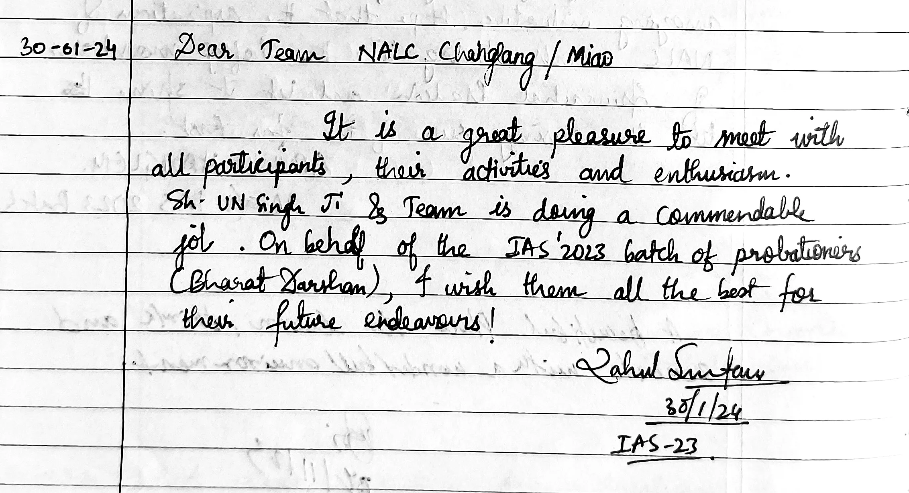
Original handwritten entry (including signature)
31 January 2024
Dr. Anupam Talwar
Deputy Director, Lal Bahadur Shastri National Academy of Administration (LBSNAA)
“A tastefully made library, maintained by an enthusiastic team. Good to see the reading spaces which look welcoming and the chart that indicates career avenues after 10th / 12th. Best wishes to the entire team.”
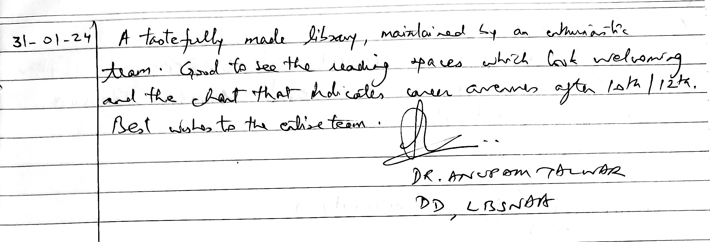
Original handwritten entry (including signature)
04 March 2024
Shri Sunny K. Singh, IAS
Then Deputy Commissioner, Changlang District, Arunachal Pradesh
“I got extremely emotional to part my ways with physically with NALC-Miao owing to my transfer from Changlang district. I believe NALC is the best experiment that me the whole NALC team together performed and this Center will go in long way to promote fun learning and inquisitiveness amongst the present and coming generation. Will dearly miss all team and members who are like family to me and will always be part of my fond memories. Good luck to all NALC team & members! Thank you.”
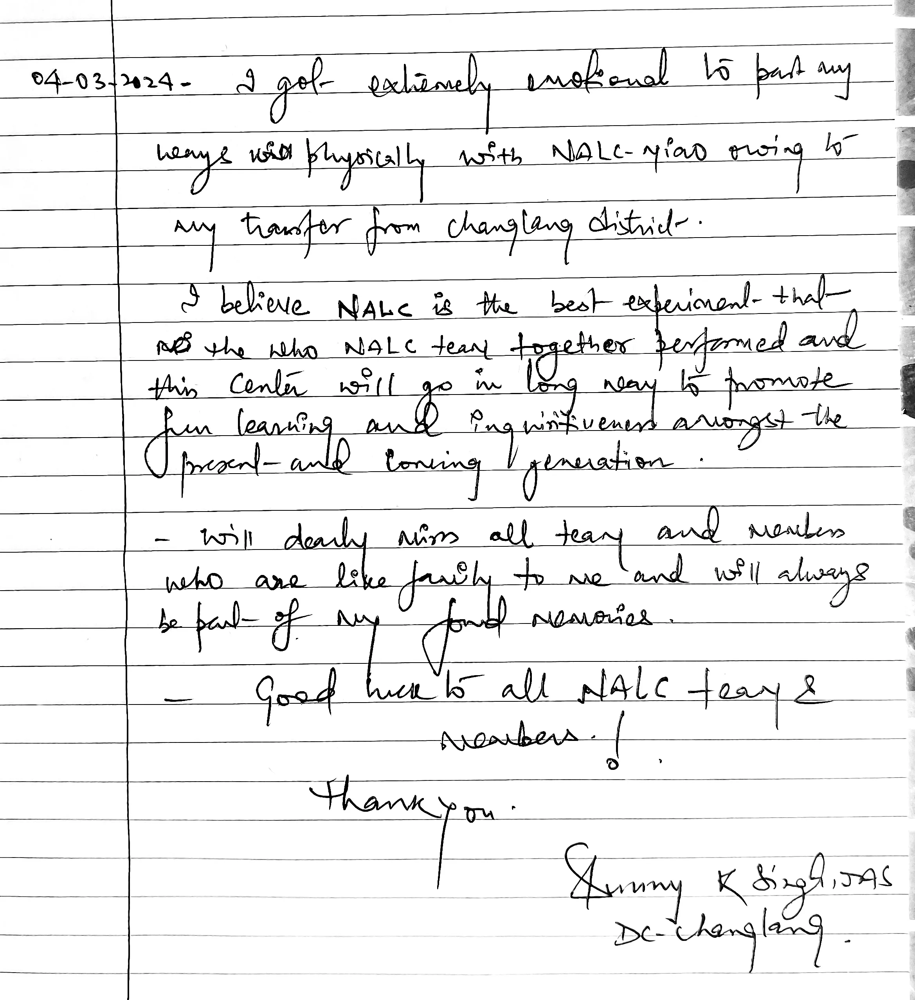
Original handwritten entry (including signature)
12 May 2024
Prof. Viji
Professor, IFMR Graduate School of Business, Krea University, Chennai
“I am very touched and impressed with NALC facilities & the enthusiasm shown by the students.”
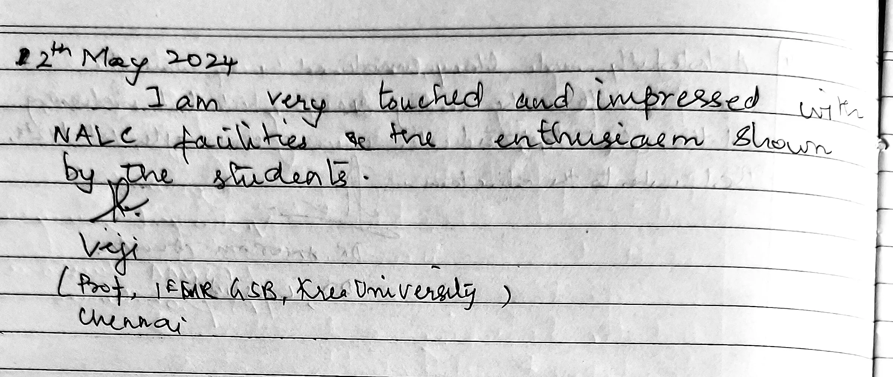
Original handwritten entry (including signature)
Note: All images are faithful black-and-white reproductions of the original handwritten entries from the Visitors’ Book. Names and designations have been recorded with due respect to protocol and rank. This page is maintained for archival and public information purposes of the New Age Learning Centre, Miao.